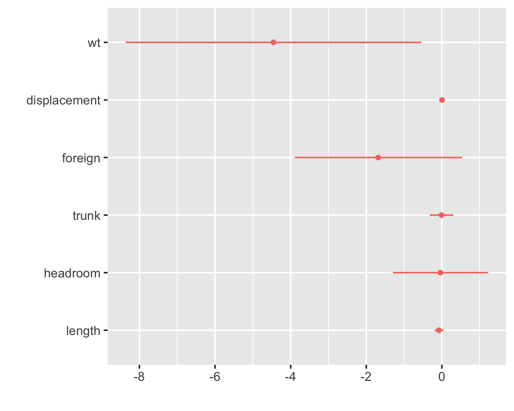
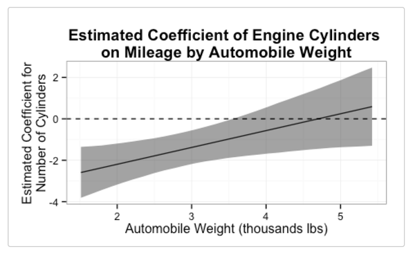
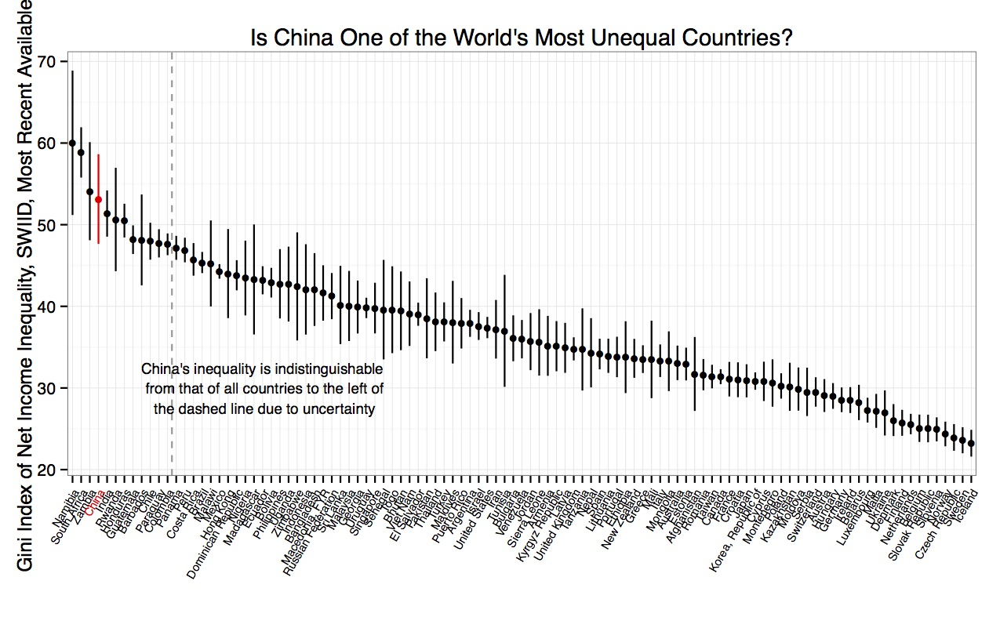

Hi everyone! Version 9.2 of the SWIID is now available! This new release adds to its source data 3834 new Ginis since version 9.1…
Hi everyone! Version 9.0 of the SWIID is now available! This new release adds to its source data 947 new Ginis since version 8.3…
Version 8.3 of the SWIID is now available! This new release adds to its source data 4759 new Ginis since version 8.2…
Version 8.0 of the SWIID is now available! In addition to important behind-the-scenes improvements to the estimation…
From its origins now over ten years ago, the goal of the Standardized World Income Inequality Database has been to provide estimates of income…

A recent exchange on Twitter reminded me of my switch to R from Stata. I’d started grad…
Version 7.1 of the SWIID is now available! In addition to important behind-the-scenes improvements to the estimation…
Version 6.2 of the SWIID is now available! Building on the end-to-end revision accomplished in Version 6.0 last July and…
Version 6.1 of the SWIID is now available! Building on the end-to-end revision accomplished in Version 6.0 last July,…
I have been producing the Standardized World Income Inequality Database for nearly a decade. Since 2008, the SWIID has provided estimates of the…
Version 6.0 of the SWIID is now available! It represents a complete, starting from scratch, end-to-end revision, with…
Today we had a workshop for our graduate students on writing peer reviews. Here are the notes I spoke from:
Version 5.1 of the SWIID is now available! It revises and updates the SWIID’s source data and estimates. It also…
If you download data from the Inter-university Consortium for Political and Social Research archive archive, you can…
If you use Pew Research Center surveys, you can make your research reproducible with the pewdata package now available…
The National Science Foundation has awarded three years of support to update and improve…
With the APSA coming up, and in the interest of minimizing the number of times we hear “sorry, I know you won’t really be able to see these…

Hu Yue and I just published interplot on CRAN, our first R package…

A new working paper by IMF researchers Serhan Cevik and Carolina Correa-Caro observes that…
Version 5.0 of the SWIID is now available, and it is a major update. A new article of record (currently available as a…
Version 4.0 of the SWIID is now available here. Drawing on nearly 14,000 Gini observations in more than 3100…
Earlier this month, I gave a talk previewing Version 4.0 of the SWIID to the Development Policy and Analysis Division of the…
Version 3.1 of the SWIID is now available here. The primary difference introduced in Version 3.1 is that the data on which…
Version 3.0 of the SWIID is now available, with expanded coverage and improved estimates.
Incorporating the standard errors in the SWIID estimates into one’s analyses is the right thing to do, but it is not a trivial exercise. I myself…
Version 2.0 of the SWIID is now available, and it is a major upgrade. It introduces two important changes from Version 1.1 (the version described in…
So much for version control. With apologies to v1.0 users, Version 1.1 is the SWIID as reported in “Standardizing the World Income Inequality…
“Standardizing the World Income Inequality Database” has been accepted for publication in the Social Science Quarterly. Version 0.9 of the SWIID is…
The SWIID is currently undergoing peer review for publication.